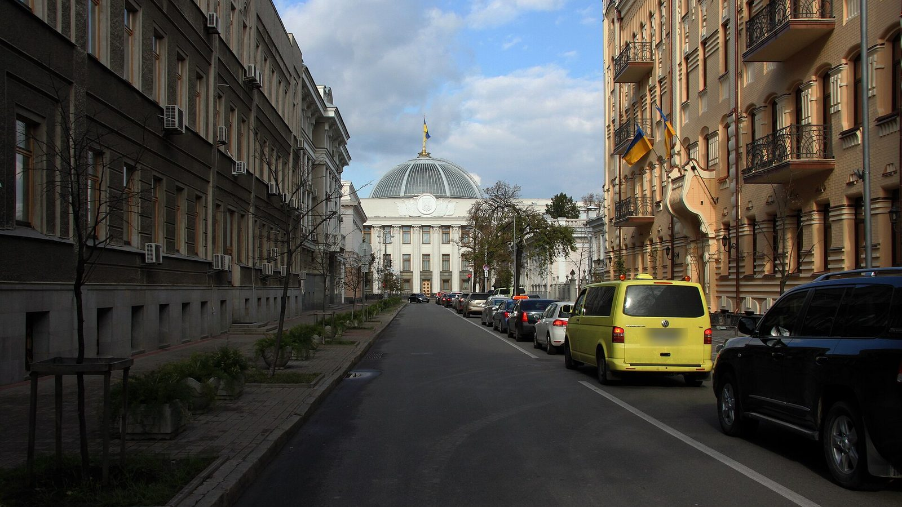

Accueil › Monde › Ukraine, front et négociations Monde Explicatif 18 oct. 2026 7 min de lecture
Guerre en Ukraine : où en sont le front et les négociations en octobre 2026
Plus de quatre ans et demi après l'invasion à grande échelle, les combats se poursuivent, les frappes sur l'énergie reprennent avant l'hiver et les discussions de paix ne débouchent sur rien. Ce que l'on sait du front, de ce que demande chaque camp, et de l'aide européenne.
Par Le Petit Monographe Mis à jour : 21 octobre 2026 · Données arrêtées au 18 octobre 2026 · 9 sources

Le bâtiment de la Verkhovna Rada, le Parlement ukrainien, au bout de la rue Hrouchevsky à Kyiv. Photo : Wadco2, CC BY-SA 3.0, recadrée et plaque d'immatriculation floutée, Wikimedia Commons
En résumé Le front : deux récits incompatibles Les civils et l'énergie Les négociations Ce que demande chaque camp L'aide européenne Ce que cela peut changer Ce qu'on ne sait pas Sources Historique
En résumé
La Russie occupe environ 20 % du territoire ukrainien, selon le Council on Foreign Relations 1 2 En septembre 2026, au moins 328 civils ont été tués et 2 105 blessés en Ukraine, selon la mission de surveillance des droits de l'homme de l'ONU : tués et blessés confondus, 85 % de victimes de plus qu'en septembre 2025 3 Le 9 octobre, des discussions à Miami entre les émissaires américains et une délégation ukrainienne se sont achevées au bout d'un jour, sans accord 4 L'Union européenne a adopté en avril 2026 un prêt de 90 milliards d'euros à l'Ukraine pour 2026 et 2027 5
2. Le front : deux récits incompatiblesTémoignageallégation non établie
Selon l'Institute for the Study of War (ISW), centre d'analyse américain qui suit le conflit au quotidien, Vladimir Poutine a affirmé mi-octobre que les forces russes avaient pris environ 6 500 km² et 310 localités depuis le début de 2026, et que l'Ukraine ne contrôlait plus qu'environ 10 % de la région de Donetsk 2
Interprétationexpertise
L'ISW évalue à environ 100 km² et 69 localités les gains russes depuis le 1er janvier 2026, avec une perte nette de 122 km² depuis le 1er septembre. Il estime que l'Ukraine contrôle encore environ 20,4 % de la région de Donetsk et 24,6 % de celle de Zaporijia 2
Interprétation
L'écart entre ces chiffres va de un à soixante-cinq. Les déclarations des belligérants ne sont pas vérifiables de façon indépendante ; les évaluations de l'ISW ne sont pas infaillibles, mais elles indiquent leurs sources. Selon ces évaluations, la ligne de front a peu bougé en 2026.
3. Les civils et l'énergieFait établi
La mission de surveillance des droits de l'homme des Nations unies en Ukraine (HRMMU) a recensé en septembre 2026 au moins 328 civils tués et 2 105 blessés, contre 249 tués et 1 068 blessés en septembre 2025. À Kyiv, des victimes civiles ont été enregistrées 22 jours sur 30 3
Fait établi
Ces chiffres sont des minimums vérifiés. Dans les territoires occupés par la Russie, la mission a pu vérifier 18 morts et 44 blessés en septembre et précise que « le nombre réel est probablement nettement plus élevé », faute d'accès 3
Fait établi
Le 30 août, le ministère russe de la Défense a annoncé préparer des « frappes massives » contre les installations énergétiques ukrainiennes. Les 13 et 14 octobre, des frappes ont touché les trois principales centrales de Kyiv ; environ 600 000 habitants ont été temporairement privés d'électricité, selon les autorités ukrainiennes. Les forces ukrainiennes ont de leur côté revendiqué 82 attaques contre des installations énergétiques en Russie et dans les territoires occupés 3
4. Les négociationsFait établi
Début septembre 2026, les émissaires américains Steve Witkoff et Jared Kushner ont rencontré Vladimir Poutine à Moscou, puis des responsables ukrainiens à Kyiv, sans percée 6 4
Témoignage
Selon des sources anonymes citées par l'agence Reuters et reprises par Meduza, les émissaires américains ont présenté à Kyiv l'accord sur le diesel russe (détaillé dans notre dossier sur le coût de l'aide à l'Ukraine ) comme un moyen de ramener le Kremlin à la table, et ont transmis la demande de Donald Trump que l'Ukraine cesse de frapper les raffineries russes. La délégation ukrainienne n'a rien accepté formellement, mais s'est dite prête à une trêve sur l'énergie si la Russie la respectait aussi 4
Témoignage
Le secrétaire d'État Marco Rubio a déclaré début octobre qu'il ne semblait pas y avoir, pour l'instant, de « perspectives de règlement négocié » ; le porte-parole du Kremlin, Dmitri Peskov, s'est dit d'accord avec ce constat 7
5. Ce que demande chaque campTémoignage
La Russie. Vladimir Poutine a rejeté toute concession territoriale russe et déclaré que la « zone de sécurité » dans le nord de l'Ukraine n'était pas négociable 2 7
Témoignage
L'Ukraine. Volodymyr Zelensky exclut de céder les territoires de Donetsk encore tenus par ses forces 7 8
Fait établi
Les États-Unis. Le 16 octobre, un décret présidentiel a écarté la plupart des sanctions prévues par une loi votée en septembre contre la Russie ; il invoque l'« intérêt national » des États-Unis, sans mentionner les négociations 9
Témoignage
Washington pousse à un accord. Le 10 octobre, Donald Trump a déclaré qu'il était « temps que l'Ukraine ait un nouveau président » 8
Interprétationexpertise
L'ISW estime que le Kremlin refuse toute concession diplomatique ou territoriale et reste attaché à ses buts de guerre initiaux, qu'il cherche à atteindre par la force 2
6. L'aide européenneFait établi
Le 23 avril 2026, le Conseil de l'UE a adopté le dernier texte nécessaire à un prêt de 90 milliards d'euros à l'Ukraine pour 2026 et 2027 : environ 30 milliards pour le budget de l'État ukrainien et 60 milliards pour ses capacités de défense, y compris des achats d'armement. Le prêt est financé par un emprunt de l'UE sur les marchés et doit être remboursé par les réparations dues par la Russie. Les versements sont conditionnés, notamment à la lutte contre la corruption. La Tchéquie, la Hongrie et la Slovaquie ne participent pas à son financement 5
7. Ce que cela peut changerLes scénarios ci-dessous ne sont pas des prévisions. Ils décrivent ce que chaque évolution impliquerait, avec l'indice à suivre.
Hypothèse
Une trêve limitée à l'énergie. C'est la seule proposition sur laquelle l'Ukraine a signalé une ouverture 4
Hypothèse
Un hiver de frappes croisées. Si les frappes russes sur le réseau électrique et les frappes ukrainiennes sur les raffineries russes se poursuivent 2 3 4
Hypothèse
Un accord qui consacre des pertes territoriales. Après l'accord sur le diesel, Volodymyr Zelensky a déclaré que « les cadeaux à Poutine n'apporteront pas la paix » 8 9 7
Hypothèse
Une Europe en premier soutien. Le prêt de 90 milliards fait de l'UE le principal financeur de l'Ukraine pour 2026 et 2027 5 5
8. Ce qu'on ne sait pasLe contenu exact des propositions américaines : aucun plan écrit n'a été publié en octobre 2026.Les pertes militaires des deux armées : les chiffres publics sont des estimations invérifiables ou des déclarations de belligérants.Le bilan civil dans les territoires occupés , que l'ONU ne peut vérifier.La position russe sur une trêve énergétique , connue seulement par des sources anonymes.9. Sources
Council on Foreign Relations, Global Conflict Tracker, « War in Ukraine », mis à jour le 15 octobre 2026. www.cfr.org/global-conflict-tracker/conflict/conflict-ukraine ↑
Institute for the Study of War et Critical Threats, Kateryna Shymkiv, Nikolai Sundstrom, Christina Harward et George Barros, « Russian Offensive Campaign Assessment, October 16, 2026 », 16 octobre 2026. www.criticalthreats.org/analysis/russian-offensive-campaign-assessment-october-16-2026 ↑
Mission de surveillance des droits de l'homme des Nations unies en Ukraine, « Civilian casualties remain at record levels amid intensifying attacks on energy as winter approaches », 16 octobre 2026. ukraine.ohchr.org/en/Civilian-casualties-remain-at-record-levels-amid-intensifying-attacks-on-energy-as-winter-approaches ↑
Source secondaire : Meduza, d'après Reuters, « Witkoff and Kushner told Kyiv that a diesel deal with Russia would help bring the Kremlin back to the negotiating table », 13 octobre 2026. meduza.io/en/news/2026/10/13/reuters-witkoff-and-kushner-told-kyiv-that-a-diesel-deal-with-russia-would-help-bring-the-kremlin-back-to-the-negotiating-table ↑
Conseil de l'Union européenne, « Council finalises €90 billion support loan to Ukraine », 23 avril 2026. www.consilium.europa.eu/en/press/press-releases/2026/04/23/council-finalises-90-billion-support-loan-to-ukraine/ ↑
NPR, « Witkoff and Kushner call Kyiv talks "substantive" after Moscow Putin meeting », 6 septembre 2026. www.npr.org/2026/09/06/nx-s1-5959657/us-envoys-witkoff-kushner-talks-in-kyiv-putin-moscow ↑
NBC News, « Jared Kushner and Steve Witkoff to discuss "new" peace plan with Ukrainian delegation, sources say », 9 octobre 2026. www.nbcnews.com/world/ukraine/russia-war-kushner-witkoff-discuss-new-peace-plan-rcna602463 ↑
UPI, « Trump executive order blocks U.S. sanctions on Russia », 17 octobre 2026. www.upi.com/Top_News/US/2026/10/17/trump-waives-sanctions-against-russia/5771792263731/ ↑
Maison-Blanche, décret « Implementing the Lindsey O. Graham Sanctioning Russia and Iran Act of 2026 », 16 octobre 2026. www.whitehouse.gov/presidential-actions/2026/10/implementing-the-lindsey-o-graham-sanctioning-russia-and-iran-act-of-2026/ ↑
10. Historique18 octobre 2026 : première publication. 21 octobre 2026 : chiffres, dates et décisions relus sur les sources d'origine. Le 21 octobre 2026, la phrase sur le décret américain du 16 octobre a été corrigée : le décret invoque l'intérêt national des États-Unis et ne mentionne pas les négociations ; l'hypothèse sur les « cadeaux à Poutine » ne présente plus la dérogation aux sanctions, postérieure à cette déclaration, comme visée par elle. Une erreur ? Une source plus récente ? Signalez-la . Les corrections sont publiées sur la page Méthode .